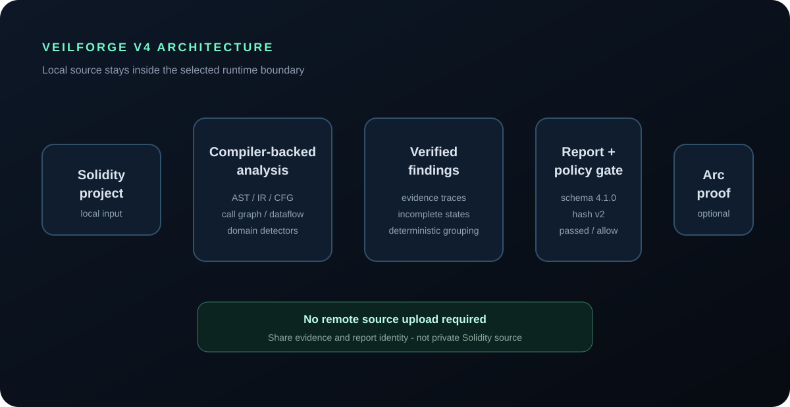
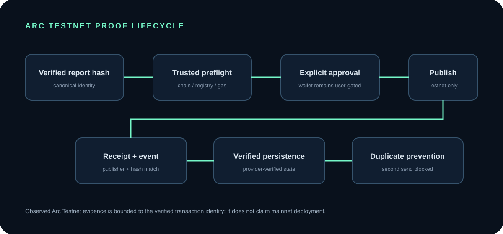
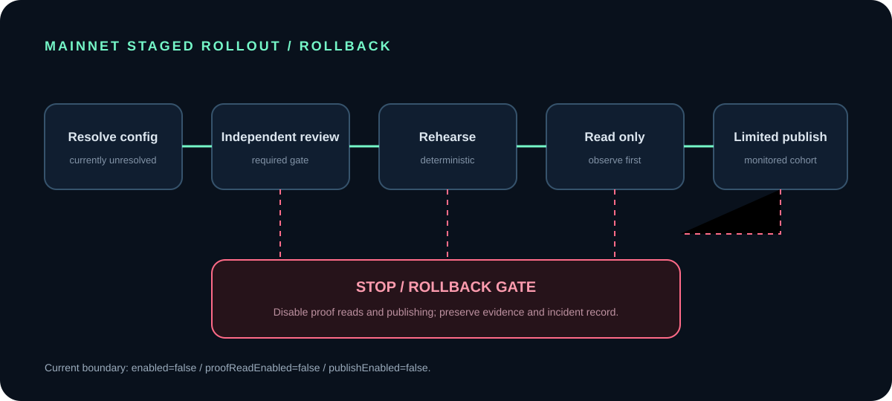
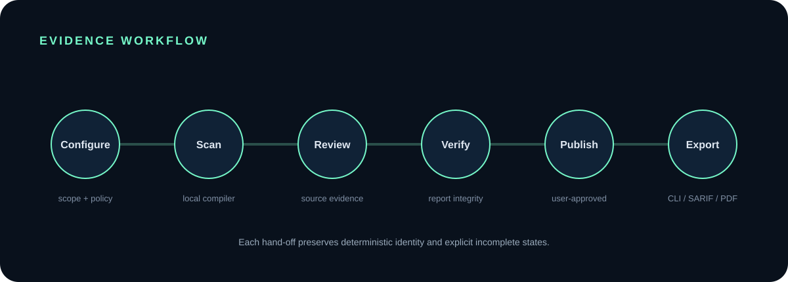
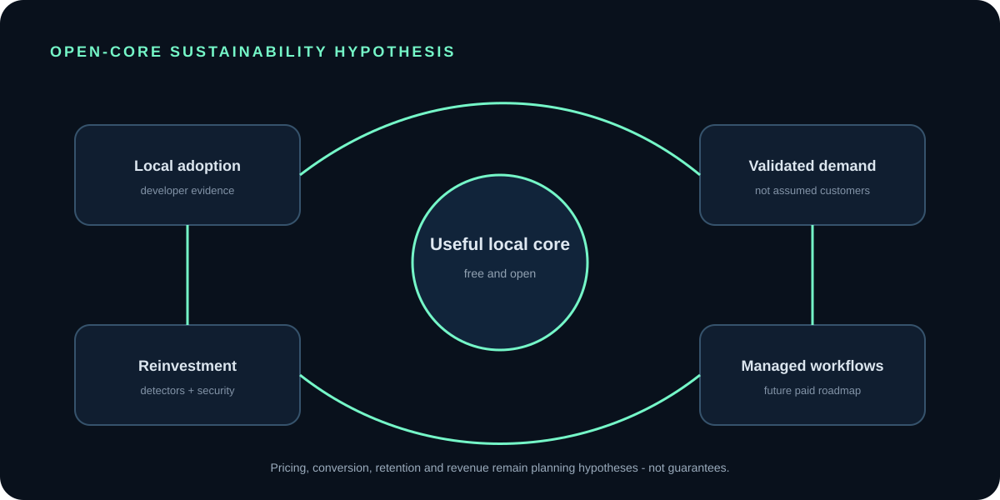

VeilForge V4
Deterministic Privacy-Readiness Analysis and Verifiable Evidence for Solidity on Arc
Grant Candidate Whitepaper Product version: 4.0.0-gc.1 Technical candidate: V4 RC1 Grant status: V4 Grant Candidate Implementation boundary: Arc Testnet Document date: 2026-08-05 Document status: Grant review draft; evidence-backed and not a release, audit, endorsement, or mainnet availability statement
VeilForge is an independent open-source project. Circle and Arc do not endorse this document or the product. The on-chain evidence described here is a real Arc Testnet implementation. Arc mainnet deployment is not claimed.
> Version terminology. “V4 GC” describes the product's grant-application status. “V4 RC1” describes technical Release Candidate 1. They refer to the same candidate baseline from different review perspectives, not to two products.
<!-- Suggested page break -->
1. Executive Summary
Financial Solidity applications disclose information through more than contract state. Calldata can reveal parameters before and during execution. Events can create durable, indexable records. Public storage and generated getters can expose values directly. Return data, revert data, metadata, and arguments passed to external calls can continue a disclosure chain. These behaviors are often legitimate parts of a public blockchain application, but teams still need a reliable way to see them, classify them against policy, and discuss the result before deployment.
VeilForge V4 is a local-first, deterministic privacy-readiness analysis system for Solidity projects, with an initial focus on Arc Payments, Arc Treasury, and Arc Private Credit workflows. It compiles exact Solidity 0.8.24 projects, builds compiler-backed program representations, follows source-to-sink provenance, produces stable findings, and packages results in verifiable reports. The same report model supports browser review, CLI and SDK use, SARIF, GitHub Action integration, policy gates, exports, local history, and an optional Arc Testnet proof-publication workflow.
The product is designed around evidence rather than a promise of perfect detection. Findings include domain, severity, confidence, disposition, source and sink context, trace information, remediation guidance, and explicit incomplete-analysis states. A deterministic schema 4.1.0 report is bound by the veilforge.report.hash.v2 payload. Verification recomputes integrity instead of trusting a displayed “verified” flag. “No finding” is never presented as proof of confidentiality.
The maintained benchmark currently contains 60 oracle cases across the three Arc-oriented domains. The recorded release baseline passes 60/60 with 56 true positives, zero false positives, zero false negatives, zero negative-case false positives, a release-gate result of passed / allow, and zero nondeterministic results. This is strong evidence for the maintained corpus, not a claim of universal correctness, audit assurance, or formal verification. Behavior outside the corpus can differ, and continued corpus and detector expansion remains necessary.
VeilForge also demonstrates a complete Arc Testnet proof lifecycle. A verified report identity was published through Registry V2 in transaction 0xdb674c986195ed9b3950f34d058637fbb2b887f58ca724400225ba177884192c at block 55469453. Receipt, event, publisher, registry, and report hash were reconciled. The browser can restore the provider-verified identity and recognize the proof as already published, preventing a second transaction request. This evidence is Testnet-only and the observed fee is not a mainnet cost estimate.
Grant support would fund the next measurable stage: hosted CI foundations, secure account and metering boundaries, private-repository workflow pilots, Team workspace foundations, detector and benchmark expansion, independent security validation, and Arc ecosystem onboarding. These items are roadmap deliverables, not current product claims. The local/open core is intended to remain useful without payment; proposed revenue would come from managed infrastructure, private collaboration workflows, support, and private deployment. Pricing and MRR figures in this paper are planning hypotheses, not customers, revenue, commitments, or guarantees.
Evidence reference: docs/grant/final/executive-summary.md, docs/grant/final/technical-evidence-index.md, docs/grant/final/grant-evidence-manifest.json.
2. The Problem
2.1 Application behavior creates disclosure surfaces
Privacy readiness for a financial smart-contract application is not identical to chain-level confidentiality. Even where a network or application architecture provides privacy mechanisms, application behavior can still reveal information at boundaries selected by the developer. A payment contract may put an internal reference into calldata or an event. A treasury workflow may expose operational data through a getter or an external integration. A private-credit application may reveal borrower, lender, collateral, terms, or decision context through a combination of storage, returns, logs, and calls.
The relevant question is therefore not simply “is this chain private?” It is “what information does this application make observable, through which path, under what policy, and with what evidence?” That question must be answered at source level, because names alone are insufficient and a single value may be transformed, wrapped, returned, stored, emitted, or passed between functions before reaching an observable sink.
2.2 Manual review is hard to reproduce
Experienced reviewers can identify many disclosure patterns, but manual review is costly and inconsistent. Review notes often lack a stable machine-readable identity. Two reviewers may describe the same path differently. A later commit can invalidate an earlier conclusion. CI systems cannot gate on an informal discussion, and a grant or deployment reviewer cannot easily reproduce it. Generic linting may identify syntax-level patterns but miss provenance, policies, wrappers, or interprocedural context.
Continuous pre-deployment review is particularly difficult for small teams. They may not have a dedicated security engineer on every change, and independent audits are periodic rather than continuous. VeilForge targets this gap: repeatable privacy-readiness evidence early in development and CI, without claiming to replace independent review.
2.3 The cost of false confidence
The most serious product risk is not merely a missed finding; it is an interface that encourages unjustified confidence. A tool can appear precise while silently skipping unsupported code, exceeding an analysis budget, or treating an unresolved boundary as safe. VeilForge makes incompleteness explicit and keeps its benchmark claims bounded. Findings are evidence for review, and absence of findings is not a confidentiality guarantee.
3. VeilForge’s Approach
VeilForge uses five design commitments.
First, analysis is local-first. Browser source is processed in an isolated worker and is not sent to a remote AI analysis service. CLI and SDK users operate on their own environment. Reports and local history can still be sensitive, so users remain responsible for where they store or share evidence.
Second, analysis is compiler-backed. Exact solc 0.8.24 produces structured output used to construct an AST index, normalized intermediate representation, control-flow graphs, call graph, and dataflow facts. The engine follows evidence across assignments, returns, calls, storage effects, wrappers, and bounded interprocedural summaries.
Third, outputs are deterministic. Stable identifiers, canonical ordering, explicit schemas, normalized paths, and versioned hash payloads make results reproducible. Operational values that would break deterministic identity are excluded from canonical report hashing where defined.
Fourth, claims are bounded. Unsupported or incomplete paths remain visible. The benchmark is described as a maintained corpus, not proof over every Solidity program. VeilForge is not an audit, formal-verification system, or confidentiality guarantee.
Fifth, the product produces verifiable evidence. Reports can be verified independently, exported in portable formats, gated in CI, and optionally anchored on Arc Testnet through a user-approved transaction whose receipt and event are reconciled against the report identity.
4. Product Scope
The current V4 Grant Candidate supports three initial analysis domains: Arc Payments, Arc Treasury, and Arc Private Credit. It accepts bounded Solidity projects, compiles exact version 0.8.24, runs the V4 analysis pipeline, classifies candidate disclosure paths, applies domain detectors and policy dispositions, and emits deterministic reports.
Shipped interfaces include the local browser scanner, CLI, SDK, JSON and Markdown exports, SARIF, GitHub Action integration, a policy release gate, report verification, limited local report history, and the proof envelope and Arc Testnet publication flow. The browser provides progressive disclosure: reviewers can begin with a status and finding summary, then inspect source-to-sink evidence, technical details, proof preflight, transaction identity, and exports.
The current scope does not include formal verification, audit replacement, universal vulnerability detection, arbitrary-chain guarantees, a confidentiality guarantee, production accounts, live billing, paid subscriptions, or Arc mainnet deployment. Hosted private CI, higher service limits, collaboration, and organization workflows are roadmap items.
5. Technical Architecture
The V4 analysis path is:
``text Solidity source -> exact solc 0.8.24 compilation -> AST index and normalized source locations -> stable intermediate representation -> control-flow graphs and call graph -> intra/interprocedural dataflow -> source/sink classification and policy -> domain detector execution -> canonical findings -> deterministic schema 4.1.0 report -> integrity verification -> JSON / Markdown / SARIF / CI gate / proof envelope ``

Figure 1 — VeilForge V4 architecture. The local source boundary feeds compiler-backed analysis and deterministic evidence. Only verified report identity is eligible for the optional, user-approved proof workflow.
5.1 Compilation and source model
The frontend accepts canonical project-relative paths and validated UTF-8 Solidity source. It rejects unsafe paths and malformed input without echoing source content into public error messages. Exact compiler version and settings are provenance inputs. Compiler output is indexed so downstream stages can refer to stable source regions rather than line-oriented pattern matches.
5.2 IR, CFG, call graph, and dataflow
The intermediate representation normalizes relevant expressions, statements, symbols, scopes, inheritance relationships, calls, storage access, and locations. Control-flow graphs represent branches, loops, modifiers, and termination. The call graph models internal, inherited, library, and resolvable external relationships while marking unresolved boundaries.
Dataflow facts track provenance through assignments, tuples, branches, loops, storage, arguments, returns, and transformations such as hashing and ABI encoding. Interprocedural summaries are bounded to prevent unbounded recursion or analysis work. When a limit or unresolved boundary prevents a justified conclusion, the analysis records an incomplete reason rather than silently converting uncertainty into “safe.”
5.3 Classification and detectors
Classification maps evidence to domain sources, sinks, policy-approved wrappers, public fields, and accepted-risk rules. Detector packs then convert classified candidates into domain-specific findings. The separation allows a common analysis core to support different financial contexts while keeping stable detector identities and testable policies.
5.4 Findings, reports, and proof
Canonical findings are grouped by semantic identity and occurrences. The report includes project and compiler identity, analysis completeness, policy status, summary counts, findings, integrity data, and namespaced extensions. Verification validates schema and recomputes hashes. A verified report can be exported or transformed into a proof envelope; the envelope binds the report hash and related anchors used by Registry V2.
Evidence reference: packages/analyzer/src/v4/, schemas/v4/report.schema.json, packages/proof/v4/, docs/releases/v4.0.0-rc1.md.
6. Browser Runtime and Privacy Boundary
The browser runtime packages the V4 scanner for a dedicated Web Worker. UI code transfers bounded input to the worker, receives structured progress, and accepts only validated result or error messages. The worker uses the pinned browser-compatible solc 0.8.24 artifact. Runtime and compiler digests are verified as part of the build and acceptance boundary.
The project limit is 100 files, 512 KiB per file, and 1 MiB total. One active scan is allowed per client. Abort, timeout, crash, disposal, and restart paths are explicit. A lifecycle repair ensures that disposing before the worker-ready handshake rejects pending work, clears request timers and state, detaches callbacks, and terminates the worker. The deterministic lifecycle evidence records ten consecutive create/scan/dispose iterations with zero orphan workers or pending request, timer, listener, and promise counts.
Source is not persisted in V4 report history. Verified report data and proof identities may be stored locally, and those artifacts can reveal project findings or metadata even when source is absent. Users should treat them as security-sensitive evidence. The browser product does not promise confidentiality against a compromised browser, extension, operating system, pasted content, screenshot, or user-directed export.
Chromium and WebKit have documented local acceptance evidence. Edge and Firefox clean-CI acceptance remains a bounded limitation in the current evidence package. The production feature flag defaults to false, the default build remains V3, and V4 is distributed separately as a preview candidate.
7. Detection Domains
7.1 Arc Payments
The Payments domain focuses on application-level exposure in payment workflows: public calldata, events that disclose payment context, storage/getter surfaces, return or revert data, external-call arguments, and metadata. It helps reviewers ask whether values intended for settlement or coordination have been made more observable than the policy expects.
7.2 Arc Treasury
The Treasury domain covers operational and administrative financial flows. It examines disclosure through storage, events, returns, calls, approvals, and calldata observation. The aim is not to label all treasury transparency as wrong; it is to produce evidence that can be compared with the intended governance and disclosure policy.
7.3 Arc Private Credit
The Private Credit domain addresses borrower, lender, collateral, terms, and credit-workflow information. These applications can combine deliberate public anchors with sensitive business context. VeilForge traces application-level exposure patterns while keeping accepted-risk and policy-approved outcomes separate from active findings.
No detector count or universal coverage percentage is claimed here. Coverage is evidenced through shipped detector paths, targeted tests, and the bounded benchmark corpus.
8. Findings and Evidence Model
A VeilForge finding is not only a warning string. It has a stable detector identity, financial domain, severity, confidence, disposition, source class, sink class, primary location, one or more occurrences, evidence and trace data, and remediation guidance. The source-to-sink model lets a reviewer see why a value was classified and how it reached an observable boundary.
Disposition is important. detected indicates an active candidate requiring review. policy-approved and accepted-risk record explicit policy outcomes rather than deleting evidence. incomplete communicates that the analysis could not justify a full conclusion. Suppression and not-applicable behavior are bounded by the report model and presentation rules.
Primary location and occurrence grouping reduce duplicate noise while retaining each relevant event or sink occurrence. Confidence describes evidence strength, not business impact. Severity describes the candidate disclosure impact under the detector model, not certainty that an exploit exists.
> Safety boundary: No finding is not proof of confidentiality. An incomplete or unsupported path must remain visible, and performance outside the maintained corpus may differ.
9. Deterministic Reports and Integrity
V4 reports use schema and report version 4.1.0. The current canonical hash payload is veilforge.report.hash.v2. Canonical JSON ordering, stable identifiers, normalized paths, explicit exclusions, and deterministic summaries allow the same verified input and configuration to produce the same integrity identity.
The report hash binds the canonical payload. Verification checks the version pair, required core properties, finding identities and locations, compiler evidence, completeness representation, summaries, and integrity components. A caller-provided verified=true value is not trusted by itself.
JSON supports machine processing, Markdown supports human review, and export manifests bind deliverable file digests. SARIF supports code-scanning workflows. Operational timestamps and environment-specific presentation data are separated when they would otherwise create nondeterministic identity. The release baseline records zero nondeterministic benchmark results.
10. CLI, SDK, and CI/CD
The CLI accepts validated project input, runs analysis in an isolated worker, reports bounded progress and errors, writes deterministic output, verifies reports and export packages, and uses explicit exit codes. The SDK exposes the same V4 contracts to Node.js integrations while preserving immutable result boundaries.
SARIF output maps findings into a standard format suitable for code-scanning systems. The GitHub Action packages the CLI workflow for repository automation. The policy gate evaluates verified results and returns a release decision; the recorded V4 baseline is passed / allow with gate false negatives at zero for the maintained release evidence.
These shipped tools support local and self-managed CI today. A managed service for private repositories, hosted history, metering, higher limits, and Team collaboration is roadmap work. The whitepaper does not present hosted private CI as currently live.
11. Arc Testnet Proof Architecture
The proof workflow begins only after report verification. A V4 proof envelope binds the report schema, hash payload, report hash, project and source-manifest anchors, compiler and scanner identity, completeness, and policy/finding summaries. Browser preflight validates the trusted Arc Testnet chain, registry address, contract code, expected publish selector, publisher identity, exact-zero transaction value, calldata, gas-estimation status, and duplicate state.
Wallet behavior is user-gated. VeilForge does not automatically connect a wallet, request a network switch, sign, or send. A transaction request is released only after trusted preflight and explicit review. Receipt normalization then verifies success, chain, registry log address, event ABI, hashes, scanner/version token, and publisher. Persistence accepts only the reconciled identity. A later lookup for the same chain, registry, publisher, and report hash returns already-published, sets the transaction request to null, and blocks a second send.
11.1 Canonical Arc Testnet evidence
| Field | Verified value |
|---|---|
| Network | Arc Testnet only |
| Transaction | 0xdb674c986195ed9b3950f34d058637fbb2b887f58ca724400225ba177884192c |
| Block | 55469453 |
| Publisher | 0x60B6333a0722bBEA39d4026b284Ae1E142bEb914 |
| Registry | 0x88B4055eaB061CEa9BdfeFF524f65ff461B5401d |
| Method | publishReport |
| Value | 0 USDC |
| Observed Testnet fee | 0.001175966 USDC |
| Report hash | sha256:fce5ffa529c79d185a6013a362e25658020d1691550557d59173c9acc6a417ea |
| Status | Success |
| Reconciliation | Receipt, event, publisher, registry, and report hash verified |
| Duplicate state | Already published; second transaction blocked |
The observed fee is historical Testnet evidence, not a mainnet fee or cost estimate.

Figure 2 — Arc Testnet proof publication lifecycle. Verified report -> trusted preflight -> explicit user approval -> Testnet transaction -> receipt/event reconciliation -> provider-verified persistence -> duplicate prevention.
12. Benchmark and Validation
The maintained oracle contains 60 cases: 20 Arc Payments, 20 Arc Treasury, and 20 Arc Private Credit. Each domain currently contains eight positive, six negative, and six adversarial cases. The release result is 60/60 cases passed, 56 true positives, zero false positives, zero false negatives, zero negative-case false positives, gate passed / allow, and zero nondeterministic results.
The metric describes agreement with version 1.0.0 of the maintained oracle and its fixtures. It does not prove that every real contract is classified correctly. Real projects can use unsupported language constructs, compiler versions, assembly, proxies, generated code, unusual libraries, or integrations that exceed current models and budgets. Future corpus expansion can reveal regressions or missing classes that the present corpus cannot measure.
Validation includes frontend, IR, graph, dataflow, classification, detector, finding, report, export, SDK, CLI, SARIF, Action, gate, proof, browser-runtime, UI, lifecycle, security, rollback, and determinism evidence. This layered approach reduces reliance on a single aggregate number while preserving the benchmark’s bounded meaning.
Evidence reference: docs/grant/final/benchmark-evidence.md, benchmarks/v4/oracle.json, docs/releases/v4.0.0-rc1.md.
13. Security Model
VeilForge’s security posture is fail-closed at trust boundaries. Browser analysis is local and worker-isolated. Input paths, sizes, encodings, and protocol messages are validated. Only verified reports enter V4 presentation and persistence. Error diagnostics avoid raw source and host paths.
Proof workflows do not automatically connect a wallet, switch networks, request signatures, or send transactions. Trusted chain and registry configuration must match. Registry runtime code and method expectations are checked during preflight. Transaction value must be exactly zero. Receipt and event reconciliation must match the report envelope and publisher before confirmation is accepted. Duplicate protection prevents preparing a second request for an existing publisher-scoped proof.
Mainnet configuration is versioned and fail-closed. Unknown or unresolved values do not become trusted defaults. Operational procedures include deployment rehearsal, staged rollout, rollback, incident response, migration planning, secret separation, and deterministic manifests. On-chain history cannot be erased by rollback, so rollback controls stop new activity and restore safe application configuration rather than claiming chain reversal.
This model reduces specific risks but does not guarantee source confidentiality or eliminate false positives and false negatives. Independent contract and application review remains necessary before mainnet use.
14. Registry V2
Registry V2 is an immutable, non-payable report-anchor contract. It has no owner, administrator, upgrade, or pause mechanism. Publication records are publisher-scoped, and the latest-record semantics can overwrite the previous record for that publisher/project scope while historical events remain public. Dynamic report content is not stored on-chain; canonical hashes and bounded metadata provide the anchor.
Immutability reduces administrative trust but limits incident response and evolution. There is no emergency pause, role rotation, migration hook, or contract-level schema understanding. Public events and publisher identity are observable. Storage and gas costs require environment-specific validation. Operational ownership, monitoring, and migration procedures must therefore exist outside the contract.
The readiness assessment considers Registry V2 compatible with operational limitations. Registry V3 is not currently required, but this is not a declaration that V2 is appropriate for mainnet without independent review. A future contract version should be justified by concrete requirements rather than version churn.
15. Arc Mainnet Readiness
The mainnet readiness package is split into GO and NO-GO evidence.
GO for preparation: versioned fail-closed configuration; deterministic deployment manifest generation; reproducible contract compilation; deployment rehearsal; staged rollout; rollback; incident response; network-config governance; and a migration plan that recognizes immutable on-chain history.
NO-GO for deployment and publishing: official mainnet network values remain unresolved; no trusted mainnet registry deployment is recorded; independent contract review is pending; operational ownership and approval roles are unresolved; and mainnet fee validation is pending. Accordingly enabled=false, proofReadEnabled=false, and publishEnabled=false remain the canonical mainnet state.
The product does not claim mainnet availability. Testnet success is useful implementation evidence, not authorization to deploy or publish on mainnet.

Figure 3 — Mainnet staged rollout. Candidate configuration -> independent review -> deterministic rehearsal -> read-only verification -> limited publish -> monitored expansion, with explicit stop and rollback gates.
16. User Experience
The V4 product journey is:
``text Configure -> Scan -> Review -> Verify -> Publish -> Export ``

Figure 4 — Configure-to-export workflow. The six product stages preserve explicit evidence hand-offs and deterministic identity.
Users configure a project label, domain selection, optional policy, and local Solidity files. The scanner shows bounded progress and supports cancellation. Verified results provide summaries and filters before exposing technical detail. Finding cards use progressive disclosure for traces, evidence, locations, occurrences, and remediation.
The proof section begins from a verified report, explains completeness, inspects an already-authorized wallet without forcing a popup, performs trusted read-only preflight, and separates review from any send action. Confirmed or duplicate state shows the verified transaction identity and explorer path. History reopens verified reports and proof state, while exports provide portable integrity-checked evidence.
Responsive styles cover desktop through 360-pixel mobile layouts. Keyboard focus, labels, live regions, reduced-motion behavior, and dialog focus handling are part of targeted accessibility evidence. Browser support remains bounded as described earlier.
17. Open-Source and Commercial Model
The proposed model keeps the community/local foundation free: scanner core, CLI, local web use, basic SDK, public detectors, portable reports, verification, and public documentation. This boundary supports adoption, reproducibility, and independent evaluation.
Paid capabilities are roadmap hypotheses. A Developer plan may provide managed private CI, hosted history, higher limits, multiple projects, and managed policy gates. A Team plan may add workspaces, roles, shared policies, dashboards, scheduling, and audit trails. Enterprise offerings may include self-hosted deployment, private runners, service agreements, onboarding, and custom detector or policy support.
Planning price ranges are $19–39 per month for Developer, $99–249 per month for Team, and custom annual pricing for Enterprise. They are not offers or live plans. VeilForge currently has no production billing, paid subscriptions, claimed customers, claimed partnerships, or claimed revenue.

Figure 5 — Open-core commercial loop. Free local adoption -> validated managed-workflow demand -> paid hosted/team/private deployment -> reinvestment in detectors, corpus, security, and Arc coverage.
18. Sustainability
Sustainability depends on preserving a useful free foundation while charging for operational value that teams do not want to build themselves. Local use can establish trust and provide a low-friction evaluation path. Managed private CI, hosted history, collaboration, policy administration, support, and private deployment can create paid demand without withholding report portability or basic verification.
The month-12 scenarios are planning assumptions. Conservative is $588 MRR, base is $3,997 MRR, and upside is $14,705 MRR. The arithmetic uses model customer counts and price points documented in the commercial evidence. These figures are not customers, bookings, first-year revenue, annualized revenue earned, or guarantees. Conversion, retention, infrastructure cost, support load, and enterprise sales cycles are open risks.
Revenue, if developed, would be reinvested in detector coverage, benchmark expansion, secure hosted operations, independent validation, documentation, and Arc-oriented integrations.
19. Grant Use and Milestones
The proposed allocation totals 100%: 35% product engineering, 15% hosted CI infrastructure, 15% security validation, 10% documentation and onboarding, 15% Arc ecosystem integrations, and 10% developer support and operations.
Milestone 1 — Hosted Foundation
Deliverables include a secure account boundary, metering model, private-CI pilot architecture, cost measurement, and explicit privacy/retention controls. Acceptance evidence should include threat-model review, tenant-boundary tests, retention behavior, measured job cost, and a private pilot checklist. Primary risks are source confidentiality and uncontrolled infrastructure cost.
Milestone 2 — Developer Workflow
Deliverables include private-repository checks, hosted report history, managed policy gates, and structured discovery with prospective users or pilots. Acceptance evidence should include end-to-end private-repository jobs, verified report retrieval, gate enforcement, deletion/retention tests, and documented feedback without fabricated customer claims.
Milestone 3 — Team Foundation
Deliverables include workspace boundaries, roles, tenant isolation, shared policies, and audit trails. Acceptance evidence should include authorization tests, cross-tenant denial, policy provenance, audit-event integrity, and operational runbooks. Risks include authorization complexity and support burden.
Milestone 4 — Arc Expansion
Deliverables include detector and corpus expansion, onboarding material, ecosystem integration work, and independent security review. Acceptance evidence should include versioned fixtures, bounded benchmark reports, integration documentation, review findings and remediation, and a mainnet decision package rather than an assumed deploy.
20. Roadmap
Current — V4 Grant Candidate: compiler-backed analysis, three Arc-oriented detector domains, deterministic reports, CLI/SDK/SARIF/Action/gate, browser preview, verified exports, Arc Testnet proof publication and reconciliation, duplicate protection, mainnet readiness controls, and grant evidence.
V4.1 hypothesis: secure accounts, usage metering, private CI, a billing abstraction that does not yet imply live payment processing, and a Developer-plan pilot.
V4.2 hypothesis: Team workspaces, roles, tenant isolation, shared policies, organization-level operational controls, and organization billing foundations.
Later hypotheses: card and USDC payment options subject to legal, tax, custody, and compliance review; Enterprise/self-hosted delivery; private runners; broader detector and corpus coverage; and additional ecosystem integrations.
Roadmap labels are deliberate. None of these future capabilities should be presented as shipped until implementation, security validation, and release evidence exist.
21. Risks and Mitigations
Detector scope and false confidence. The maintained corpus is bounded. Mitigation: explicit incomplete states, conservative claims, corpus expansion, detector identity, and independent review.
False positives and false negatives outside the corpus. New language patterns and architectures can differ. Mitigation: adversarial fixtures, regression gates, reproducible reports, user policy, and transparent limitations.
Browser limits and compatibility. Large projects or unverified browser families may fail. Mitigation: 1 MiB fail-closed limit, CLI/SDK alternatives, worker lifecycle controls, and clean-CI expansion.
Private-repository security. Hosted analysis would create a materially stronger trust boundary. Mitigation: do not launch it until tenant isolation, encryption, retention, access, incident response, and independent validation meet documented acceptance evidence.
Open-source monetization and conversion. Users may prefer self-managed operation. Mitigation: preserve open value and charge for reliable operations, collaboration, support, and private delivery rather than artificial lock-in.
Hosted cost and support burden. Compiler workloads and enterprise support can be expensive. Mitigation: metering, bounded jobs, cost measurement, staged pilots, support tiers, and capacity gates.
Enterprise cycle and compliance. Sales, procurement, card or USDC payments, privacy, and tax obligations may take longer than expected. Mitigation: treat pricing and payment methods as hypotheses, obtain specialist review, and avoid revenue guarantees.
Arc dependency and network changes. Network details, explorers, fees, and ecosystem priorities can change. Mitigation: versioned config, trusted evidence, read-only preflight, explicit mainnet NO-GO, and portable reports.
Immutable Registry V2. No pause or upgrade exists. Mitigation: independent review, operational gating, limited publication, monitoring, migration planning, and readiness to use a future registry only when requirements justify it.
22. Known Limitations
The following limitations are central, not footnotes:
- The 60-case benchmark is bounded to the maintained oracle corpus.
- Exact Solidity 0.8.24 is the supported compiler baseline.
- Browser projects are limited to 100 files, 512 KiB per file, and 1 MiB total.
- Unsupported constructs, unresolved calls, budgets, malformed projects, and compiler failures can create explicit incomplete outcomes.
- Chromium and WebKit have documented local evidence; Edge and Firefox clean-CI acceptance remains incomplete.
- VeilForge is not an audit or formal-verification replacement.
- VeilForge does not guarantee confidentiality, vulnerability absence, or correctness outside the corpus.
- Source remains local in the intended browser flow, but the browser, host, extensions, reports, history, screenshots, and exports remain security boundaries.
- Arc mainnet is not deployed or enabled.
- Paid plans and production billing are not live.
- Registry V2 is immutable, public, publisher-scoped, and operationally limited.
- Testnet fees are historical observations, not mainnet estimates.
- Policies and accepted-risk decisions remain an operator responsibility.
23. Why VeilForge Merits Grant Support
VeilForge presents a working system and reproducible evidence rather than only a concept. The compiler-backed pipeline, domain detectors, reports, developer interfaces, browser runtime, policy gate, and proof workflow are represented in source and targeted tests. A real Arc Testnet transaction demonstrates that the report-to-proof lifecycle has crossed the boundary from design to implementation.
The project addresses a specific ecosystem need: application-level privacy-readiness evidence for financial Solidity workflows. Its local-first boundary is useful for teams that do not want to upload source to a remote analysis service. Its deterministic artifacts support developer trust, CI review, and grant evaluation. Its limits are stated directly.
Grant funding would unlock measurable infrastructure, security, corpus, and onboarding work without being presented as guaranteed commercial success. The commercial model is credible enough to test but honestly labeled as hypothesis. This combination—existing technical evidence, Arc-specific focus, responsible boundaries, and measurable next milestones—is the basis for requesting support. It is not an endorsement claim.
24. Conclusion
VeilForge V4 is a grant candidate and technical release candidate for deterministic Solidity privacy-readiness analysis. It provides compiler-backed evidence, explicit uncertainty, reproducible reports, developer and CI interfaces, a local browser workflow, and a verified Arc Testnet publication identity. The maintained benchmark and validation record are strong within their defined scope.
The project also has clear boundaries. It does not replace an audit, guarantee confidentiality, claim universal detection, operate production billing, or claim Arc mainnet deployment. Browser coverage, compiler support, corpus breadth, Registry V2 operations, hosted security, and commercial conversion remain areas for continued work.
The proposed grant stage converts those open areas into measurable milestones: secure hosted foundations, Developer and Team workflows, expanded Arc evidence, independent review, documentation, and operations. A coordinated release should proceed only after its separate release, browser, deployment, and human-review gates are satisfied.
<!-- Suggested page break -->
25. Evidence Governance and Document Control
A grant evidence package is useful only if reviewers can distinguish observed facts from plans and can trace important statements back to stable sources. VeilForge therefore treats evidence governance as part of the product boundary rather than as final-stage marketing work. This paper uses six statuses: shipped and verified; shipped with bounded limitations; roadmap; mainnet unresolved; commercial hypothesis; and not claimed. A capability can move between these categories only when new implementation and acceptance evidence exists.
25.1 Claim lifecycle
A technical claim begins with a source contract: a schema, public API, configuration boundary, detector identity, or workflow definition. Targeted tests then exercise the contract, and release evidence records the observed result with its scope. A user-facing statement must preserve both the result and the scope. For example, “60/60” is incomplete on its own. The governed statement includes the maintained 60-case oracle, 56 TP / 0 FP / 0 FN, gate passed / allow, nondeterminism zero, and the explicit limitation that the result is not universal correctness.
On-chain claims require an additional identity chain. The report hash must match the verified report; the proof envelope must bind that hash; preflight must use the trusted network and registry; the receipt must succeed; the expected registry event must be decoded from the trusted address; and the publisher, report hash, and other anchors must match. Only then can the transaction be described as verified publication evidence. A block explorer display is helpful corroboration, but it does not replace application-side receipt and event reconciliation.
Commercial statements follow a different lifecycle. A price range can be a hypothesis without being a live plan. An MRR scenario can be arithmetically consistent without being revenue. A customer profile can describe a target problem without implying that a customer exists. The evidence package therefore keeps planning assumptions separate from shipped product capabilities and from not-claimed outcomes.
25.2 Canonical sources and derived documents
The final grant manifest is the machine-readable index for this package. It records product and commit identity, evidence files and per-file digests, claim classifications, Arc Testnet transaction identity, benchmark summary, commercial status, mainnet state, and limitations. Its canonical digest uses recursively key-sorted JSON without insignificant whitespace. Operational generation time and the digest field itself are excluded so a timestamp does not change the evidence identity.
This whitepaper and executive brief are derived reader documents. They do not replace code, schemas, tests, release records, or the grant manifest. When a value conflicts, reviewers should return to the canonical source and treat the conflict as a release blocker. The Phase 5F-3 consistency test checks the identities most likely to cause material misrepresentation: transaction hash, report hash, publisher, registry, benchmark metrics, compiler version, report schema, hash payload, browser limit, MRR scenarios, budget total, mainnet gates, version terminology, and unsupported-claim boundaries.
25.3 Reproduction and independent review
The evidence index lists repository paths and reproduction commands so a technical reviewer can choose the depth appropriate to the claim. Fast review can begin with the executive brief, benchmark evidence, Testnet proof evidence, mainnet decision, and limitations. A deeper review can inspect the V4 source directories, schemas, fixtures, and targeted tests. Full release validation remains a coordinated process because compiler, browser, and cross-browser chains have different prerequisites and can be expensive.
Reproduction must not broaden authorization. Read-only proof reconciliation is different from sending a transaction. A deployment rehearsal is different from mainnet deployment. Building an isolated preview is different from enabling production V4. The repository commands and runbooks preserve these boundaries, and this document does not authorize wallet prompts, network switches, sends, releases, or deployments.
Independent review should challenge both implementation and framing. Technical reviewers should examine unresolved call boundaries, dataflow budgets, canonicalization, report verification, browser lifecycle cleanup, wallet preflight, Registry V2 semantics, and mainnet configuration. Product and grant reviewers should check that the UI does not imply stronger guarantees than the engine, that roadmap capabilities are not presented as live, and that a Testnet result is not converted into a mainnet claim.
25.4 Change control
Evidence must be refreshed when a governed input changes. Detector or oracle changes require targeted and aggregate benchmark review. Report schema or hash-payload changes require compatibility, canonicalization, verification, export, SDK, and proof review. Compiler changes require frontend and browser-runtime parity evidence. Registry, ABI, address, chain, or proof changes require trusted preflight and receipt/event acceptance. Commercial-model changes require pricing, MRR, free-versus-paid, milestone, and risk consistency checks.
Presentation-only changes can use a narrower path when protected sources remain unchanged. The Phase 5F-3 landing work is an example: version labels, accessible descriptions, responsive spacing, and preview route behavior can be tested without rerunning the analyzer benchmark, provided the protected analysis, oracle, schema, proof, contract, and registry sources remain unchanged. The shared release manifest still needs deterministic refresh because source-file bytes changed.
25.5 Release and submission decisions
Three decisions should remain separate. Evidence-package readiness asks whether the documents are consistent and reviewable. Coordinated V4 release readiness asks whether code, browser support, versioning, manifests, rollout, rollback, and human approvals are complete. Grant submission readiness additionally asks whether public repository visibility, live links, team/contact information, requested amount, video, screenshots, legal review, and final editorial review are complete.
Passing one decision does not automatically pass the others. A complete whitepaper can coexist with a production feature flag that remains false. A real Testnet transaction can coexist with mainnet NO-GO. A benchmark gate can pass while external submission assets remain TODO. This separation prevents documentation work from silently authorizing operational actions.
26. Appendices
Appendix A — Technical evidence index
Primary evidence entry points:
- docs/grant/final/technical-evidence-index.md
- docs/grant/final/benchmark-evidence.md
- docs/grant/final/arc-testnet-proof-evidence.md
- docs/grant/final/mainnet-readiness-evidence.md
- docs/grant/final/commercial-sustainability-evidence.md
- docs/grant/final/milestones-and-budget.md
- docs/grant/final/known-limitations.md
- docs/releases/v4.0.0-rc1.md
- docs/releases/v4-web-browser-support.md
- docs/releases/v4-arc-testnet-proof-acceptance.md
- docs/releases/v4-arc-mainnet-readiness.md
- packages/analyzer/src/v4/
- packages/proof/v4/
- apps/web/v4/
- schemas/v4/report.schema.json
- benchmarks/v4/oracle.json
Appendix B — Reproduction commands
Commands are repository-local and may require the documented Node.js and browser prerequisites. They do not authorize a wallet transaction or deployment.
``text npm.cmd run test:v4-frontend npm.cmd run test:v4-ir npm.cmd run test:v4-graphs npm.cmd run test:v4-dataflow npm.cmd run test:v4-classification npm.cmd run test:v4-findings npm.cmd run test:v4-report npm.cmd run test:v4-cli npm.cmd run test:v4-sdk npm.cmd run test:v4-sarif npm.cmd run test:v4-action npm.cmd run test:v4-gate npm.cmd run test:v4-proof npm.cmd run test:web-v4-runtime npm.cmd run test:web-v4-ui npm.cmd run test:grant-evidence ``
The Phase 5F-3 task intentionally does not rerun the full analyzer, benchmark, cross-browser, or transaction chain when protected analysis sources are unchanged.
Appendix C — Canonical identities
- Product: 4.0.0-gc.1
- Technical candidate: V4 RC1
- Report schema: 4.1.0
- Hash payload: veilforge.report.hash.v2
- Compiler: exact 0.8.24
- Benchmark: 60/60; 56 TP / 0 FP / 0 FN; negative FP 0; gate passed / allow; nondeterminism 0
- Testnet transaction: 0xdb674c986195ed9b3950f34d058637fbb2b887f58ca724400225ba177884192c
- Testnet block: 55469453
- Publisher: 0x60B6333a0722bBEA39d4026b284Ae1E142bEb914
- Registry: 0x88B4055eaB061CEa9BdfeFF524f65ff461B5401d
- Report hash: sha256:fce5ffa529c79d185a6013a362e25658020d1691550557d59173c9acc6a417ea
Appendix D — Glossary
AST: Abstract syntax tree produced from compiler-understood source structure. CFG: Control-flow graph describing possible execution paths within a callable. Call graph: Relationships among internal, inherited, library, and other callable boundaries. Dataflow: Provenance facts describing how values move or transform. Disposition: The policy/review state of a candidate finding, such as detected, approved, accepted, or incomplete. Evidence: Structured source, sink, trace, context, and integrity information supporting a finding or report. Incomplete: An explicit state indicating that analysis could not justify a complete conclusion. Oracle corpus: The maintained labeled benchmark cases used to measure the recorded release result. Proof envelope: A verified off-chain structure binding report identity and publication inputs. Registry V2: The immutable Arc Testnet report-anchor contract used by the demonstrated publication. SARIF: Static Analysis Results Interchange Format for code-scanning integrations.
Appendix E — Document references
- Final grant package: docs/grant/final/
- Commercial foundation: docs/business/
- Grant sustainability: docs/grant/grant-sustainability.md
- Release and operational evidence: docs/releases/
- Architecture decisions: docs/adr/
- Final evidence manifest: docs/grant/final/grant-evidence-manifest.json
Appendix F — Version terminology
V4 GC means VeilForge V4 Grant Candidate and communicates grant-review status. V4 RC1 means VeilForge V4 Release Candidate 1 and communicates technical release status. Product version 4.0.0-gc.1 remains the shared package/report candidate contract. The labels coexist intentionally; they do not describe separate engines, schemas, or products.
---
End of Grant Candidate Whitepaper.